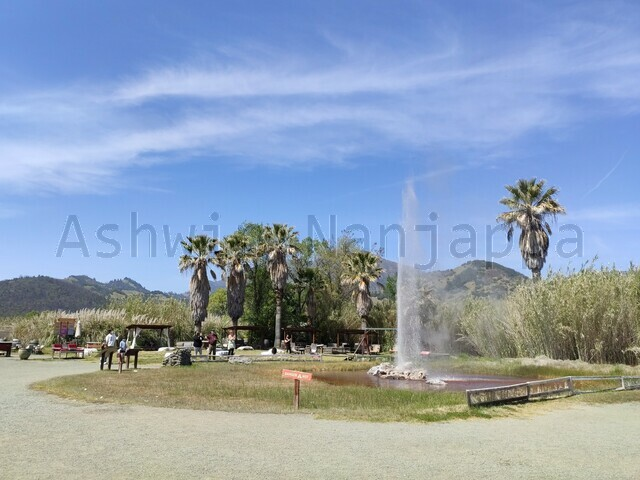
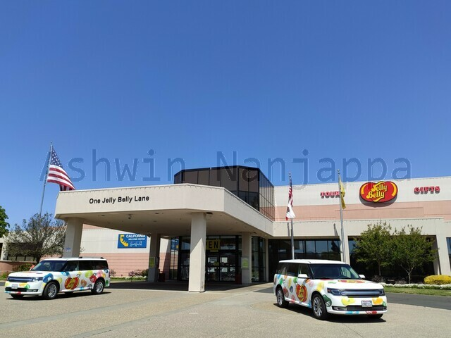

Napa Valley is the most famous wine region of California and the US. It is the region surrounding Napa city in the Napa county, which lies to the North of San Francisco. We chose to spend a few relaxing days in Napa Valley along with our 5-year old son and newborn baby.
Drive
The drive from Santa Clara to Napa city took about 1.5 hours.
While going to Napa, we did a midway stop at the Walmart at Martinez city.
While returning from Napa, we did a detour to Fairfield for our son and Suisun city for lunch.
This resort is right beside the Napa River, is conveniently close to a Walmart supercenter and a short drive from downtown Napa.
The Napa River Trail goes through the campus and is great for a calm morning or evening walk.
The checkin was done without entering their office and the checkout was done by texting - all very convenient due to COVID precautions.
We had called the resort in advance for a playpen (Graco Pack-n-Play) which they provided and was useful for our baby.
See and do
The #1 thing to do in the Napa Valley is wine tasting at the hundreds of wineries and wine cellars that are peppered alongside highway 29 to the north of Napa city.
We chose to do wine tasting and picnic lunch at the V Sattui Winery, which was about a 30 minute drive from our resort. No reservations were needed (we went there on a weekday). The winery has a beautiful picnic area under the trees, where we chose a picnic table, bought wine and lunch from the winery’s store and had a super relaxing lunch session. The winery’s campus is idyllic and beautiful, very reminiscent of an Italian winery.
The Oxbow Public Market has many beautiful stores inside including one for wine-and-cheese tasting.
We found the food at Model Bakery to be excellent for breakfast and that at Gott’s Roadside to be great for lunch. Both places had outdoor dining, so we felt safer eating there.
Old Faithful Geyser of California
We drove 45-minutes up north to the Old Faithful Geyser of California. This is a small geyser that shoots up every hour and there are relaxing seats and haystacks to relax on while watching it. Our son loved the geyser, playing corn hole and feeding the goats and sheep they have there.
We wanted to see the Napa Valley Welcome Center but it was closed when we went there on a Wednesday.
If you are curious about the Welcome to Napa Valley sign, there are two of them (one on either side of the road) that can be found during your drive up north on highway 29.
Jelly Belly Candy Factory
On the way back from Napa, we did a small detour to see the Jelly Belly Candy Factory at Fairfield. They have a factory tour with videos (for a small fee), a big store and a big cafe (with lots of food). Sadly the production had been halted for maintainence when we were there, so our tour we just watched the videos and the idle equipment on the factory floor. Despite this, our son absolutely loved this, I would recommend this stop if you have kids. Call ahead to know if they the factory is under active production or not.
All in all, Napa Valley is a beautiful place and a must-see with a partner or friends. It is not that great if you are visiting with kids though, since there is not much for them to do there.